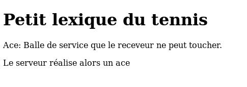
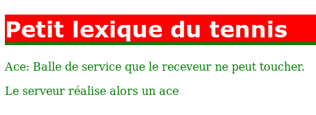

Introduction :
Jusqu'à maintenant, vous avez appris à STRUCTURER vos pages web en introduisant des balises correspondant à un élément dans votre texte (un paragraphe, une image) et en les sauvegardant sous forme de fichier HTML. Vous allez maintenant apprendre à METTRE EN PAGE vos pages HTML, c'est-à-dire à définir un style de présentation pour les éléments de la page en utilisant des couleurs, un type ou une taille de caractères, etc.
Vous allez réaliser cette opération à l'aide du CSS.
Tout d'abord, il est important de ne pas utiliser les attributs dépréciés pour styliser les pages (exemple : <table border="1" bgcolor="#999999" align="center">).
- CSS :
-
Le CSS (Cascading Style Sheet) permet de définir la présentation de page web indépendamment de leur structure et de leur contenu (rôle du HTML). Cette séparation présente une série d'avantages.
- La structure du documentet la présentation peuvent être gérées des fichiers séparés. Dans un premier temps, on définit le contenu de la page web; ensuite, on en définit la présentation.
- On peut définir des présentations différentes pour un même contenu. Par exemple, pour un même site, on peut définir respectivement une présentation pour mobile et pour écran d'ordinateur.
- Dans le cas d'un site web, la présentation est uniformisée : les documents (pages HTML) font référence aux feuilles de style et auront donc tous le même "look". Ceci permet permet beaucoup de souplesse lors d'une modification de la présentation.
- Cette technique permet la cascade de styles. La "cascade" est la combinaison de différentes CSS appliquées à un même document.
Comme pour le HTML, vous utiliserez l'éditeur de votre choix pour définir vos CSS, par exemple Notepad++ ou VSCode.
Donner un style à un élément :
Avant d'aborder les détails techniques de la conception d'une feuille de style, observez tout d'abord l'exemple très simple qui suit :
| Le code de la page HTML : | L'affichage par le navigateur : |
|---|---|
|
 |
|
 |
Syntaxe :
En CSS, l'élément HTML dont on veut définir le style est désigné sans mettre des chevrons (< et >) autour de son nom. Il s'appelle le sélecteur, h1 en est un dans notre exemple.
Le sélecteur est suivi d'une accolade ouvrante et puis de la liste des propriétés. Chaque propriété a un nom, color par exemple suivi de : et de la valeur que l'on veut donner à cette propriété, white pour h1 dans notre exemple. La valeur est suivie d'un ;. La description du sélecteur se termine par }. Le bloc sélecteur suivi de ses propriétés forme une règle CSS. Cette CSS met en forme sauf spécification contraire tous les éléments h1 en les écrivant en blanc.
Les exemples qui suivent bont respecter une certaine indentation qui nous semble la plus claire pour le lecteur : nom du sélecteur sur la première ligne, liste des propriétés à raison d'une par ligne et pour terminer l'accolade fermante. Dans la réalité, l'écriture est tout à fait libre et notre exemple pourraît être écrit sur une seule ligne.
L'ordre dans lequel appareissent les règles CSS n'a aucune importance mais le bon usage veut que vous commenciez par la règle la plus générale, c'est-à-dire la règle body correspondant à la balise <body> en HTML.
L'ordre dans lequel apparaissent les propriétés d'un sélecteur n'a également aucune importance et il n'existe pas de recommandation à ce sujet. Certains développeurs utilisent la règle dite "DPF" qui permet de mettre les propriétés display et position en tout premier pour savoir le type d'affichage et la position exacte du sélecteur dans la page.
Comment insérer le CSS dans le HTML ?
Première solution : à l'intérieur d'une balise :
Cette solution n'est pas conseillée et est même en contradiction avec le principe d'indépendance entre structure et mise en page de la page web. En effet, la description du style peut se faire individuellement, pour un mot ou paragraphe de page par exemple et ce dans le fichier HTML.
Ceci revient en fait à se fait à se passer de CSS.
<p style="font-size: 16pt;"> définirait une taille de caractères pour le paragraphe qui suit. On aura jamais recours à cette solution dans le cadre de ce cours.
Deuxième solution : dans le fichier HTML :
Le CSS est incorporée dans le fichier HTML. On rajoute une balise <style type="text/css"> dans la section <head> de la page HTML et on introduit ensuite la liste des éléments et leurs propriétés. Cette énumération se termine en introduisant la balise de fin de style </style>.
Exemple :
<head>
<style type="text/css">
h1 {
color: maroon;
font-family: sans-serif;
border-bottom: 1px solid black;
}
p {
color: black;
}
</style>
</head>Les règles CSS sont alors exclusivement applicables à la page HTML en question.
Troisième solution : dans un fichier séparé :
-
Les règles CSS sont incluses dans un fichier séparé dont l'extension sera .css; par exemple style.css. Ce fichier est une feuille de style externe. Attention, il ne faut surtout pas inclure, dans le fichier .css, la balise <style> qui est du HTML.
-
On ajoute à la page HTML un élément qui permet de faire le lien entre la page et son style qui a été enregistré dans le fichier d'extension .css.
<link type="text/css" rel="stylesheet" href="style.css">L'attribut href fait le lien avec le fichier CSS externe (voir à ce sujet le cours sur les différents adressages). L'attribut rel indique au navigateur que le fichier lié est une feuille de style. L'attribut type indique à ce même navigateur que le contenu du fichier lié est de type CSS.
Cette troisième solution permet de n'avoir qu'une seule feuille de style pour plusieurs pages HTML. Vous comprenez maintenant pourquoi un des avantages de CSS est d'unifier le style des pages d'un site Web et de faciliter les mises à jour de ce style. En effet, les modifications ne sont effectuées qu'une fois, dans le fichier CSS qui porte sur toutes les pages HTML qui y font référence grâce à l'instruction link dans la section head des fichiers HTML correspondants.
Remarquez qu'il est également possible de lier une seule feuille HTML à plusieurs feuilles de style CSS. Il y aura alors plusieurs éléments link ou style dans la feuille HTML (pour rappel, c'est pour cela que ces feuilles de style s'appellent des "cascades").

Cette troisième solution est une recommandation du W3C. C'est pourquoi nous vous demandons de l'utiliser ! Les deux autres solutions ont été simplement citées pour information mais ne les utilisez pas !!!
Cela permet à des personnes malvoyantes ou dyslexiques d'adapter la page soit avec un paramétrage de leur système ou de leur navigateur soit en ajoutant elles-mêmes de feuilles de style supplémentaires. Cela leur permet par exemple de grossir le texte, d'écarter les lignes, de changer les couleurs...
Enfin, il est important de bien avoir en tête que les feuilles de style CSS ont pour unique objectif de mettre en forme la page. Il ne faut pas qu'elles apportent du contenu essentiel. Cela est parfois le cas avec l'utilisation de la propriété CSS content pour ajouter du texte ou de la propriété background-image pour ajouter une image qui n'est pas uniquement décorative. Il faut également que l'ordre des éléments reste logique même si le style CSS3 est désactivé.
Pour être les plus écologiques possible, il faut que les feuilles de style soient les plus courtes et lesmoins nombreuses possibles. Cela n'est pas évident. Le bon compromis est donc de regrouper dans une feuille de style toutes les règles CSS qui sont nécessaires pour l'ensemble du site et de créer des feuilles de style additionnelles pour les pages particulières le nécessitant.
Par exemple, toutes les pages du site utilisent une feuille de style générale et deux pages ont chacune une feuille de style supplémentaire : la page des vidéos pour gérer l'affichage de celles-ci et les pages de formulaires pour la mise en forme de ceux-ci. Ainsi, la feuille de style générale n'est pas trop lourde puisqu'elle ne contient pas les règles spécifiques pour les vidéos et les formulaires. Elle sera chargée une seule fois lors de la première visite sur l'une des pages du site. Elle ne sera pas rechargée lors de la navigation sur les autres pages puisque le navigateur l'aura en cache. Puis, si le visiteur navigue sur l'une des pages spécifiques, une autre feuille de style sera chargée à ce moment-là.
Validation du CSS :
Tout comme pour le code HTML5, le code CSS3 peut être validé via un validateur créé par le W3C. Vous trouverez ce validateur à cet endroit : http://jigsaw.w3.org/css-validator/.
Les sélecteurs :
Nous avons vu qu'une déclaration CSS se compose d'un sélecteur. Celui-ci permet de sélectionner un ou plusieurs éléments HTML dans le but de leur donner du style. Nous allons voir ici les différents sélecteurs possibles les plus courants. À vous par la suite de choisir celui qui est le plus approprié à chaque cas qui se présente.
La sélection simple :
Pour sélectionner tous les paragraphes d'une page HTML, le sélecteur prend la forme de l'élément HTML sans les chevrons (< et >). Voici ci-dessous comment appliquer une couleur verte ainsi qu'une police particulière à tous les paragraphes d'une pahe HTML.
p {
color: green;
font-family: sans-serif;
}On peut regrouper différents éléments ensemble pour leur appliquer un même style. Exemple :
article, p, h3 {
color: green;
font-family: sans-serif;
}Il est également possible de sélectionner tous les éléments à l'intérieur via la notation :
div p {
color: green;
font-family: sans-serif;
}On sélectionne dans l'exemple tous les paragraphes contenus dans un <div> et uniquement ceux-là ! Les classes et les ids peuvent bien évidemment être utilisés dans cette notation.
La sélection universelle :
Le sélecteur universel * permet de sélectionner tous les éléments HTML d'une page et de leur affecter un style. Celui-ci est souvent utiliser afin d'initialiser tous les éléments HTML à une valeur par défaut qui pourra ensuite être modifiée (voir outrepasser l'héritage ci-dessous). Dans l'exeple ci-dessous, nous définissons les marges de tous les éléments HTML à 0.
* {
margin: 0;
}Certains développeurs utilisent toujours le code ci-dessous en tout premier dans leur fichier CSS pour créer une mise à 0 de tout le style de la page :
*, ::before, ::after {
box-sizing: border-box;
margin: 0;
padding: 0;
}box-sizing: border-box; permet, en gros, d'indiquer au navigateur de prendre en compte la bordure et le remplissage dans la valeur définie pour la largeur et la hauteur. Pour plus d'informations la propriété box-sing, cliquez ici.
::before et ::after sont des pseudo-éléments qui se placent, comme leurs noms l'indiquent, avant ou après l'élément sélectionné. Le sélecteur universel ne prend pas en compte ces pseudo-éléments dans sa liste. Ils sont souvent utilisés pour ajouter du contenu cosmétique à un élément, en utilisant la propriété CSS content. Par défaut, ce contenu est de type "en ligne". Ils sont contenus dans la boîte de mise en forme de l'élément et, aussi, ils ne s'appliquents pas aux éléments remplacés tels que les éléments <img> ou<br>. Pour plus d'informations sur ::before et ::after.
Les classes :
-
Dans l'exemple de la sélection simple, tous les paragraphes et leurs "descendants" seront écrits en vert. Il est possible de donner un style différent à un seul des paragraphes, à un des titres h1, h2, h3 de la page à l'aide d'une classe. La classe permet de sélectionner individuellement ce paragraphe ou ce titre.
-
Dans la page HTML, on va associer l'élément en question à une classe :
<p class="premiereclasse"> -
Dans le code CSS, un sélecteur de classe est rajouté :
p.premiereclasse { color: black; }Seul le paragraphe associé à la classe premiereclasse sera écrit en noir.
-
-
On peut vouloir utiliser le style défini dans une classe à différents éléments de la page HTML.
Certains titres de niveau h1 peuvent également se voir appliquer les propriétés de la classe premiereclasse :
-
Dans la page HTML, on va associer le ou les titre(s) h1 en question ainsi que certains paragraphes sélectionnés à la classe :
<h1="premiereclasse"> -
Dans le code CSS, un sélecteur de classe est rajouté :
p.premiereclasse, h1.premiereclasse { color: black; }
-
-
Pour pouvoir styler n'importe quel élément avec les propriétés de la classe premiereclasse, il suffit de définir la classe dans le fichier CSS sans l'associer à un élément. Le nom de la classe s'écrit avec un point suivi du nom de la classe :
.premiereclasse { color: black; } -
Un élément HTML peut appartenir à plusieurs classes. <p class="premiereclasse">
Il pourrait y avoir plusieurs sélecteurs portant sur une propriété donnée pour un même élément. Quelle est la propriété qui sera alors appliquée ? Celle de la dernière classe de la liste.
Dans l'exemple ci-dessus, les classes premiereclasse et deuxiemeclasse peuvent toutes deux déterminer une couleur de caractères différentes. Dans ce cas, c'est la dernière dans le fichier CSS qui sera utilisée.
Les ids :
Chaque élément HTML peut avoir un attribut id qui doit être unique dans une page donnée. Nous pouvons dans notre feuille de style CSS appliquer un style uniquement à cet élément dont nous connaissons l'id. Voici un exemple :
#monSuperParagraphe {
color: red;
font-family: sans-serif;
}Dans le code HTML, nous définissons un id sur un paragraphe bien déterminé. Ensuite, dans la feuille CSS, nous pouvons accéder à ce paragraphe et lui appliquer un style grâce au caractère #.
Autres sélections :
Il est possible également de sélectionner des éléments HTML par leurs attributs, par la valeur d'un attribut, par parent-enfant directs, mais nous n'avons généralement pas besoin de ces sélecteurs pour un site Web simple. Nous vous renvoyons vers la documentation du W3C à ce sujet pour ceux que cela intéresse : Sélecteurs W3C.
Cascade et Héritage :
Cascade :
CSS est l'abréviation de Cascading Style Sheet. Il y a donc une notion de cascading, mais qu'est-ce que cela peut bien vouloir dire ? En fait, lorsqu'une page HTML est affichée, les sources CSS peuvent être multiples. Il y a bien sûr la feuille de style définie par l'auteur (vous) mais à celle-ci s'ajoute la feuille de style du navigateur et même celle de l'utilisateur. Les règles CSS présentes dans ces feuilles de styles vont donc potentiellement entrer en conflit. Que faire dans le cas où deux règles peuvent s'appliquer sur une même propriété ? Et bien le "cascading" répond à cette question en instaurant un système de priorité. Il est donc important de bien connaître cette notion afin de "debugger" efficacement son code CSS.
Plusieurs feuilles de style :
Comme mentionné au paragraphe précédent, il existe différentes feuilles de style s'appliquant ) votre site même si vous n'en définissez qu'une seule. La première feuille de style à s'appliquer est la feuille de style du navigateur. Si vous ne définissez aucune feuille de style pour votre page HTML, celle-ci s'affichera néanmoins avec un style par défaut (la feuille de style du navigateur). Ceci explique également en partie pourquoi le rendu peu différer d'un navigateur à l'autre, leurs feuilles de style étant quelque peu différentes.
La deuxième feuille de style à s'appliquer est celle de l'auteur (concepteur du site web). Il s'agit de la feuille de style que vous créérez le plus souvent.
La troisième feuille de style à s'appliquer est celle de l'utilisateur. Elle permet à l'utilisateur (surfeur) de définir sa propre feuille de style et donc d'adapter les sites web à sa convenance (par exemple : définir une police plus grande pour plus de lisibilité).
Règles spécifiques :
Plus une règle est complexe, plus elle sera spécifique et donc plus elle sera spécifique et donc plus elle sera prioritaire. Voyons comment ce calcul de spécificité est réalisé. Pour chaque règle CSS, le sélecteur est analysé et un nombre de 4 chiffres lui est attribué. Le premier chiffre indique si le sélecteur est utilisé localement (via un attribut style dans le code HTML) ou non. Ce premier chiffre devrait donc toujours valoir 0 si on respecte les recommandations du W3C. Attention, un style local est prioritaire sur les autre styles !
Le deuxième chiffre indique le nombre d'IDs présents dans le sélecteur.
Le troisième chiffre indique le nombre de classesou pseudo-classes présentes dans le sélecteur.
Le quatrième chiffre infique le nombre d'éléments HTML présents dans le sélecteur.
Au plus ce nombre est élevé, au plus la règle est spécifique et donc prioritaire.
Exemple dans une feuille de style externe :
p 0,0,0,1
p.myclass 0,0,1,1
#myid p.myclass 0,1,1,1L'ordre de priorité établi par le "cascading" est le suivant :
- Type de media : une règle ne s'applique que pour le media visé (une règle sur le media print ne s'applique pas pour le media screen).
- Origine de la feuille de style : utilisateur → auteur → navigateur. Une feuille de style utilisateur aura donc toujours la priorité sur une feuille de style auteur !
- Poids de la règle : la déclaration !important permet d'octroyer plus de poids à une règle en cas de conflit.
- Spécificité : plus une règle est spécifique (voir ci-dessus), plus elle est prioritaire.
- Ordre d'apparition.
Héritage :
Certains éléments sont parfois imbriqués dans un autre élément. Ils vont alors hériter des propriétés de cet élément. On dit que les éléments enfants héritnet du style de leurs parents.
Exemple de fichier .css :
body {
color: yellow;
background-color: blue;
}
p {
color: white;
}Quand une propriété est définie au niveau de l'élément <body>, tous les éléments enfants de <body> en héritant si celle-ci s'y prête (sauf contre-ordre). Cet héritage s'étend à tous les niveaux. Si une couleur de fond (background-color) est donnée au niveau de <body>, tous les éléments de la feuille concernée ainsi que leurs enfants seront affectés. Dans notre exemple, toute la page aura un fond bleu. Remarquez que certaines propriétés ne s'appliquent pas à tous les éléments. Par exemple, la couleur de fond ne s'applique pas à la balise <img>. D'autres propriétés (souvent liées à la mise en page) ne sont tout simplement pas héritées (margin, padding, border, width, height, ...).
Les propriétés liées à la mise en page (margin, padding, height, width, border,...) ne sont pas héritées !
Les propriétés de couleur ou liées à la police de caractères sont héritées !
Outrepaser l'héritage :
On peut vouloir qu'une des propriétés du parent ne soit pas applicable à un des enfants. La couleur des caractères de ma page peut être jaune (propriété définie à l'aide du sélecteur body) et on peut vouloir qu'un élément ait des caractères d'une autre couleur; les caractères de l'élément p seron blancs dans notre exemple. On outrepasse l'héritage en introduisant une règle spécifique pour p. L'élément paragraphe hérite la couleur de caractères d'un paragraphe est différente.
p { /* permettre que les paragraphes soient écrits en blanc */
color: white;
}En CSS3, une déclaration d'importance a été introduite, il s'agit de !important. Vous pouvez ajouter à une propriété cette déclaration d'importance, c'est alors celle-ci qui prendra le dessus en cas de conflit.
* {
color: black !important;
}Vous l'aurez sans doute remarqué. Savoir définir des styles est une chose, être sûr du résultat final en est une autre. Certains éléments seront hérités, d'autres pas (margin, padding, border, height, ...). Le cascading aura également son effet. Il est donc utile d'avoir un outil (debugging) qui nous montre quelles règles sont appliquées dans un cas bien précis.
Une bonne pratique est de commenter vos sources. Pour introduire des commentaires dans les CSS, il suffit d'encadrer vos remarques par /* et */.
/* Ceci est un tout petit commentaire... */Il existe une notation CSS qui s'appelle BEM (Block Element Modifier), dont vous pouvez voir les explications ici.
Il existe également un préprocesseur nommé SASS et dont l'extension est .scss. Vous trouverez toutes les vidéos de présentation dans l'article du youtubeur Grafikart dont voici le lien.